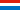

Entente Mine Cockerill Esch sur Alzette
Katzenberg Mine
Useful Information
| Location: |
Esch sur Alzette
(49.47624380814974, 5.97634119806248) |
| Open: |
APR to OCT Mon-Fri 8-12, 13-17, Sat, Sun 8-12. [2021] |
| Fee: | |
| Classification: | |
| Light: | electric. |
| Dimension: | |
| Guided tours: | |
| Photography: | |
| Accessibility: | |
| Bibliography: |
Mine Katzenberg à Esch,
Du passé Industriel à la Préserveration d'un Site; 25 ème anniversaire de l'Entente Mine Cockerill.
Clemens Heng, Luxembourg, SBN/GTIN 978-99959-0-306-0. €25

Henri Clemens (): Geschichte der Grube Katzenberg Britta Winkel (): Die Grube Katzenberg als Museum und Industriedenkmal |
| Address: | Musée de la mine Cockerill, Rue Jean-Pierre Bausch, 4114 Esch-sur-Alzette, Tel: +352-265-4421. info@cockerill.lu ellergronn@anf.etat.lu |
| As far as we know this information was accurate when it was published (see years in brackets), but may have changed since then. Please check rates and details directly with the companies in question if you need more recent info. |
|
History
| 08-AUG-1881 | Grube Katzenberg eröffnet. |
| 1967 | Grube Katzenberg geschlossen. |
Description
The Musée de la mine Cockerill (Cockerill Mine Museum) displays fossils, lamps and mining tools, as well as other artefacts from the life in the miners. It was created by the Entente Mine Cockerill Esch sur Alzette, a non-profit organisation of volunteers, who preserve the local mining heritage. They work for the preservation and promotion of the Katzenberg mining site in Esch-sur-Alzette. They also offer guided tours for groups of eight people or more. The Cockerill Mine Museum is a site on the European Route of Industrial Heritage.
The museum shows all the typical machinery and tools of a working
- See also
 Search Google for "Entente Mine Cockerill Esch sur Alzette"
Search Google for "Entente Mine Cockerill Esch sur Alzette" Google Earth Placemark
Google Earth Placemark Cockerill-Sambre - Wikipedia (visited: 03-Jun-2021)
Cockerill-Sambre - Wikipedia (visited: 03-Jun-2021)- Charles Collart - Wikipedia (visited: 03-Jun-2021)
- Jules Collart - Wikipedia (visited: 03-Jun-2021)
 Entente Mine Cockerill Esch sur Alzette, official website (visited: 03-Jun-2021)
Entente Mine Cockerill Esch sur Alzette, official website (visited: 03-Jun-2021)- "Entente Mine Cockerill Esch sur Alzette" Association (visited: 03-Jun-2021)
- Museum of the Cockerill Mine (visited: 03-Jun-2021)
- Grube Katzenberg / Mine Cockerill
 (visited: 03-Jun-2021)
(visited: 03-Jun-2021)
 Index
Index Topics
Topics Hierarchical
Hierarchical Countries
Countries Maps
Maps Search
Search